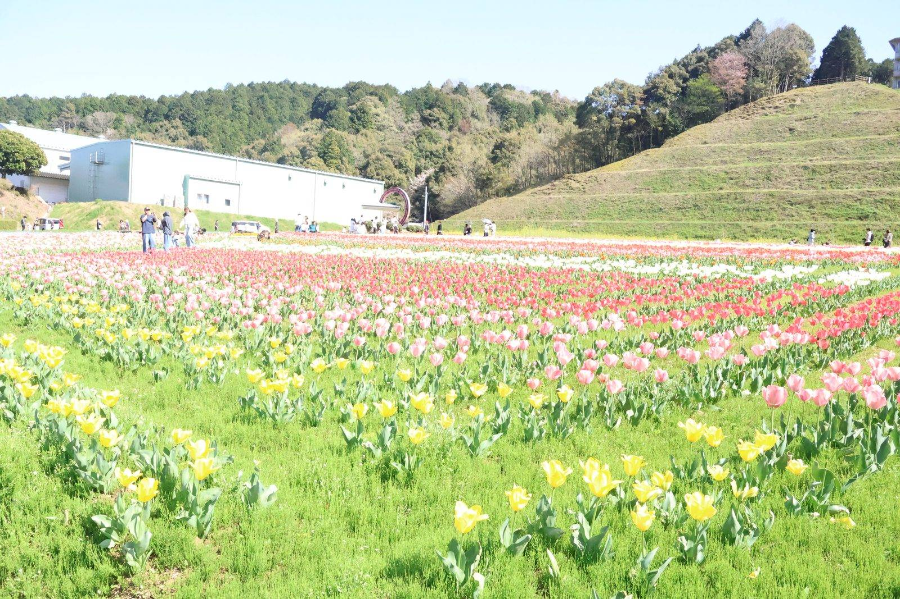

大洲の視点 ・ 出典: 大洲市オープンデータ「主要観光施設入込み状況調」 ・ 約6分で読める

要点
大洲市は「主要観光施設入込み状況調」というデータを毎年オープンデータとして公開している。
施設ごと・月ごとの来場者数が、Excelでそのまま置いてある。
平成29年度から令和６年度まで８年度分あったので、全部落として並べ直してみた。
令和６年度の合計は487,108人。前年度から18,570人増えている。
大洲の観光施設と言われて最初に浮かぶのは大洲城だと思う。実際は４位だ。
１位は道の駅「清流の里ひじかわ」の216,698人。大洲城（50,056人）の約4.3倍にあたる。
しかもこれは令和６年度だけの話ではなく、８年度すべてで１位だった。
最少だった平成30年度でも187,688人あり、２位以下を一度も許していない。
国道197号沿いにあり、農産物直売所やレストラン、コインランドリーまで揃う。
観光というより、日常の買い物や休憩で使われている施設だと考えたほうが数字に合う。
そして見落としがちなのが２位で、こちらも道の駅だ。まちの駅「あさもや」の72,664人。
つまり上位２つがどちらも道の駅で、この２つだけで市全体の来場者の約６割（289,362人 ÷ 487,108人 ＝ 59.4％）を占めている。城下町の観光施設は、数の上では脇役ということになる。
２位のあさもやには、もっと大きな変化が隠れていた。
平成30年度の181,292人が、令和元年度に106,217人へ落ちている。
コロナ禍が始まる前年だ。そこからさらにコロナで30,779人（令和３年度）まで沈み、いま72,664人まで戻したところ、というのが実際の形になる。
令和元年度の落ち込みが一番大きいのに、時期がコロナと合わない。
なぜ令和元年度に７万人減ったのかを説明する資料は、市の公開資料の中に見つけられなかった。
集計方法の変更なのか、施設側の事情なのかは分からない。ここは断定を避けておく。
いずれにせよ、ピーク時の水準にはまだ４割しか戻っていない。市全体の来場者数が令和６年度に増えている一方で、あさもやだけは別の曲線を描いている。
逆にいちばん伸びたのが盤泉荘（旧松井家住宅）だ。大正時代の建物を公開している施設で、令和６年度は18,837人だった。
観光まちづくり戦略会議の資料に、年度ごとの推移が載っている。
2023年度から2024年度で12,684人増えているが、そのうち11,679人が外国人だ。
増加分の約92％がインバウンドだったことになる。日本人の来場者はほとんど変わっていない。
理由も資料に書いてある。韓国の旅行団体「新世界」のツアーがほぼ毎日来ていたことと、愛媛県の事業で大洲城や盤泉荘の割引チケットが配布されていたことだ。
2024年度の盤泉荘のインバウンドは約97％が韓国だった。「大正の邸宅が人気になった」というより、「韓国の団体ツアーの立ち寄り先になった」という説明のほうが実態に近い。
同じ資料に、続きが書かれている。
「新世界のツアーが2026年１月より来なくなるため、実績値より30日×40人×３ヶ月の3,600人は減少」。
つまり伸びの主因だったツアーは、すでに終わっている。１日40人が毎日という規模だったことも、この一文から逆算できる。
それでも2025年度の最終見込みは26,463人とされていて、その分はフランス（29人→97人）・ドイツ（８人→50人）・オーストラリア（34人→166人）といった別の国からの増加で埋める見通しになっている。１国に依存した数字が、分散し始めているところだ。
あわせて、2026年１月１日の新規予約分から、４月１日には全対象で団体割引が廃止される。
臥龍山荘ではオーバーツーリズム対策としてバスで来訪する人数を50名以下に抑えるコントロールも始まっている。
増やす段階から、選ぶ段階に移りつつあるということだと思う。城下町再生全体の数字については戦略会議の中間報告をまとめた記事のほうで書いた。
いちばん落ちたのは大洲家族旅行村のキャンプ・コテージで、平成29年度の26,337人が令和６年度は4,137人。８年間で84.3％減だ。
ただ、この数字を「８年かけてじわじわ減った」と読むと間違える。年度ごとに並べると、こうなっている。
２年で26,337人が1,027人になっている。崖のような落ち方で、そこから先は下げ止まって動いていない。
減少期にあたる平成30年度は、平成30年７月豪雨で大洲市が甚大な被害を受けた年度と重なる。
ただしオープンデータには理由の記載がないので、豪雨が原因だと断定できる資料は確認できなかった。ここも事実の並びだけ書いておく。
いずれにせよ、この施設については「回復していない」ではなく「別の水準で安定してしまっている」と見るほうが正確だ。
4,000人台という数字が５年続いているのは、需要が戻る途中というより、これが今の定常値だということを意味している。
最後に、目立たないが伸び率がいちばん大きい施設を挙げておきたい。
伊予大洲駅観光案内所だ。令和２年度の5,625人から令和６年度は25,604人。
4.6倍になっている。前年度比でも5,078人増で、盤泉荘に次ぐ伸び幅だった。
案内所は、それ自体が目的地ではない。ここに寄る人が増えているということは、行き先を決めずに大洲に着く人が増えているということになる。
城や道の駅の数字よりも、この施設の伸びのほうが観光地としての性格の変化を表しているように見える。
８年分を並べて分かったのは、「大洲の観光」がひとかたまりでは動いていないことだった。
生活に根ざした道の駅、インバウンドで跳ねた大正の邸宅、豪雨の年に崖から落ちたまま戻らないキャンプ場、静かに4.6倍になった駅の案内所。それぞれ別の理由で、別の方向に動いている。
この記事をサイトに掲載した日: 2026/08/18
この記事は noteにも掲載しています。